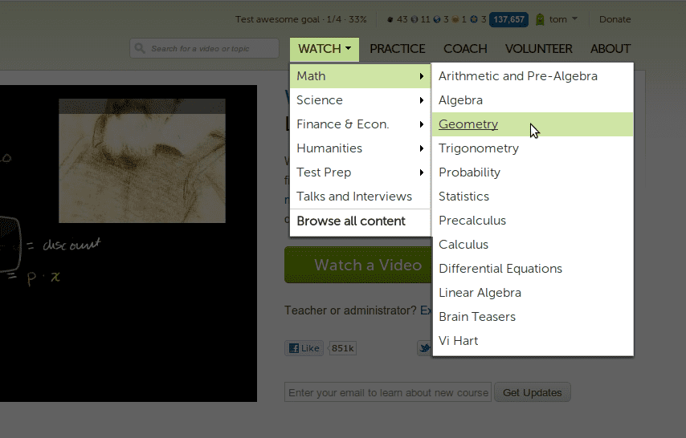

Statistics: The science of producing unreliable facts from reliable figures. -Evan Esar
There is a trendy practice being advocated in a number of software development teams, which is to measure everything1 and A/B test radical ideas2. It sounds good on paper: Instead of crowding together in a meeting room and debating pros and cons or relying on a designer to make all the decisions, why not let the customers vote with their clicks? On the other hand, there are some outspoken critics of A/B testing who claim that it marginalizes good design3 and it leads to bad decision-making4 in many cases. At Khan Academy, a company that provides a free service to a global population diverse in age and nationality, there is really no way to know what the effect of many of our changes will be except to try them and measure the results.
The result of our experiments thus far boils down to this:
Data is easy to collect but hard to interpret, never giving you a clear result that confirms your hypotheses. However, even noisy and confusing data is invaluable in forming and testing hypotheses about user behavior.
Long story short, so far the best we've gotten is some comfort knowing we haven't made things worse, and maybe a little insight into how users behave contrary to our expectations.
Process
Last week at Khan Academy we completed a sequence of experiments over a few months aimed at improving navigation through the site. On this project we intentionally divided the work into small shippable changes so we could observe the changes in user behavior. Why is this process important? Because we as developers are biased by our prior knowledge of how the site works and how we want it to work, and the best direct user feedback we can hope for is a vocal minority5. We will tend to err on the side of changing everything, and the vocal minority tend to be those highly invested in the status quo. Therefore, we need objective measurements of how visitors to the site behave and how this changes over time. over time.
Our data collection is as comprehensive as possible: we report user actions to Google Analytics and MixPanel. We also collect conversion data for A/B tests using GAE/Bingo6. After each deploy, we monitored all these statistics for a week to see the effect of the changes on both weekend and weekday traffic, which can differ dramatically. Then we took the results into account when deciding the next steps.
Long list of links
The khanacademy.org homepage is a textbook example of a KISS7 solution that doesn't scale especially well. When you click the "Watch" link you get this:
(It has since been taken down, and many mouse scroll wheels cried out in relief)
Rather than diving in and trying to improve things, we started by trying to understand user behavior. How effective was this layout (long page full of text links with a sticky navigation header at the top of the screen) at getting users to the video content they are looking for? Here is some sample data from MixPanel:
What you see here:
- Of all the users in the sample who landed on the homepage, 22.29% selected a topic from the topic browser. (There are other ways to get to videos, but it's useful to know what subset of the population we're looking at)
- Of those who clicked on the topic browser, 80.67% clicked on a video in the Big List of Links.
- Of those who clicked on a video, 86.71% started watching the video.
- Of those who started watching a video, 74.27% completed it.
There is clearly a lot of room for improvement here.
The fun part
So now we come to the changes we've been rolling out. Since I last wrote about our topics reorganization in February, there have been two major changes tested and shipped that take advantage of the new structure:

The Watch menu replaced the link that takes you to the top of the video list with a drop-down menu of topics that initially navigated you to the specific topic you selected, and eventually to the relevant topic page once those were released.
Topic pages were designed carefully to help visitors find content faster without overwhelming them with thousands of video titles. They are also a big step forward visually - I am particularly proud of the Art History page. Go on, have a look. Isn't it beautiful?
Aside from helping visitors get their bearings, topic pages afford many secondary benefits: They are easy to bookmark and link to, they can load much faster than the homepage, they can be included in site search results, and they can be indexed directly by search engines. As we build new features based on topics, they will naturally be surfaced here, and doing further A/B tests on these pages is easier than doing them on the homepage.
The results
Here is a chart of some of our key video conversion results for topic pages:
The columns show data for "supertopic" pages (such as Algebra), "subtopic" pages (such as Solving Linear Equations), and "content topic" pages (such as Finance, which has no subtopics) as well as the homepage topic browser for comparison. The top three rows show the percentage of visitors who clicked on, started, and completed a single video. The bottom three rows show the retention rates between steps.
There are two things to notice here:
- The retention rates after the visitor has clicked on a video link are marginally better than on the homepage. This seems good.
- The click-through rate is quite a bit lower in some cases than the topic browser on the homepage. This seems bad.
These two contradictory trends roughly cancel each other out in the final number of visitors completing a video! Obviously, we were hoping for a significant improvement in overall conversions and we aren't seeing one.
The analysis
Our general attitude at Khan Academy is to ship often and adjust course as necessary, and this is a tacit admission that no plan survives contact with the user base. The thing that has amazed me more than anything else about this is how similar the conversion numbers are even when comparing between completely different pages and navigation styles! While the numbers aren't an obvious home-run, we can see that those visitors who found a video were more likely to watch it, which is a sign that indeed they are more easily finding the video that they are looking for. And while the slightly lower initial click-through rate could be improved, the number of visitors to the topic pages seems to be rising over time, and with it the total number of clicks on video links from topic pages.
It's also important to step back from the numbers for a bit and look at the big picture: Topic pages give us more flexibility for future features, they are a better experience for navigation than the homepage, and we can get massive SEO benefits from of them. Analytics is just one part of the decision-making process, and one we are taking with a grain of salt while we continue to try to better understand it. I'm really happy with how this project turned out and look forward to sharing our next amazing contributions to online education.